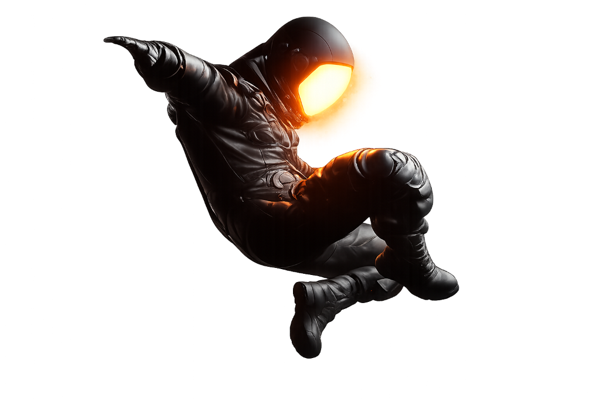

Tomato is An Innovator Who Focuses On User Experience Design. He Is Good At Creating Smooth And Intuitive Interactive Experiences For Users Through Simple And Emotional Designs. He Has Extensive Cross-Platform Design Experience, From Mobile Applications To Web Design, And Always Adheres To The User-Centered Design Concept.

本次作品集精选了UI/UX设计、动画设计、网页设计及3D相关的作品，作品涵盖项目和个人练习两个维度，其中包括包含工作项目中的设计，也有一些平时个人练习的作品
This Portfolio Selects Works Related To UI/UX Design, Animation Design, Web Design And 3D. The Works Cover Two Dimensions: Projects And Personal Practice. They Include Designs From Work Projects As Well As Some Works From Personal Practice.
Some of the visual works in the work use AIGC tools, midjourney, MJ, SD and other tools
The layout of the work and the packaging of the work are all completed in Figma.
Some of the visual images in the work were processed using the Generative Fill function of Photoshop.
The UI and visual animation effects in the work were produced using After Effects